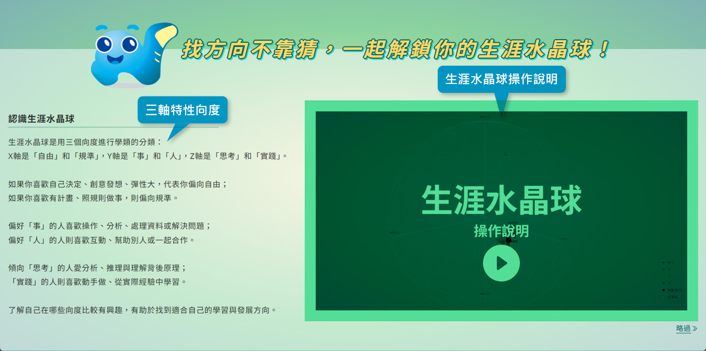
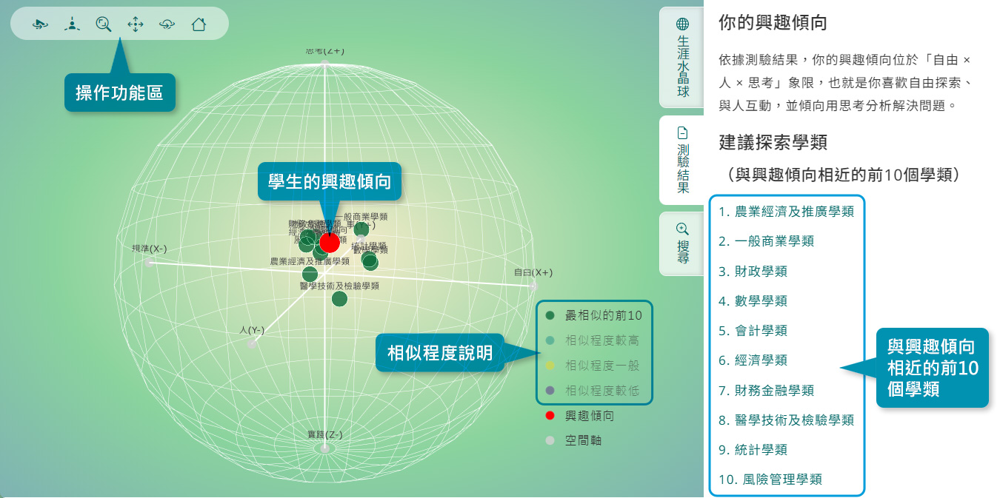
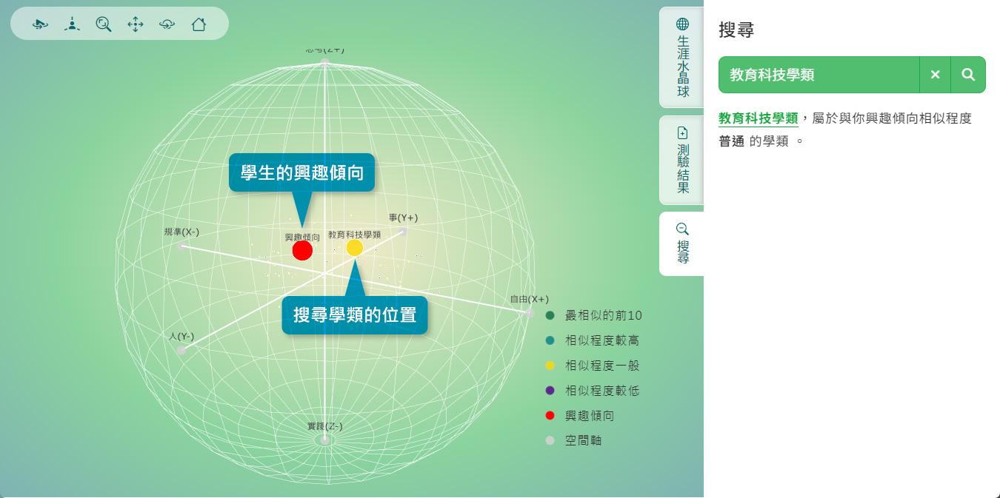

生涯水晶球呈現的是學生興趣傾向與大學學類之間的相似關係，主要用於支持生涯探索，而非提供升學選填或生涯決定的唯一答案。教師進行結果解讀時，仍應綜合考量學生的能力、學業表現、價值觀、學習經驗、生活條件及個人目標。
-
- 生涯水晶球
-
生涯水晶球以「自由－規準」、「人－事」及「思考－實踐」三個向度，將各大學學類所對應的興趣活動特性配置於三維空間中，呈現不同學類的特性、相對位置與彼此關係。這三個兩極向度用來描述學類特性的差異，並無高低或優劣之分。教師可引導學生觀察學類在空間中的位置與群聚情形，從不同角度理解自己的興趣傾向，作為探索可能契合之學習領域與未來發展方向的起點，而非直接決定升學或生涯選擇。
-
生涯水晶球根據學生在36種興趣次類型上的測驗結果，以三維立體圖像動態呈現學生的興趣傾向及其與各大學學類之間的相對關係。圖中的紅色標記代表學生的興趣傾向；各學類則依其與學生興趣傾向的相似程度，區分為「最相似的前10個學類」、「相似程度較高」、「相似程度一般」及「相似程度較低」四類。教師可引導學生先從與興趣傾向相近的學類開始探索，並連結生涯資訊系統，進一步瞭解各學類的學習內容、相關校系及未來發展。 在本系統的視覺化呈現中，學類位置與學生興趣傾向越接近，表示兩者的興趣特徵越相似；但相似程度不代表學生的能力、錄取機會或未來學習表現，也不應作為升學選擇的唯一依據。
-
除依據系統呈現的相似程度瀏覽學類外，學生也可使用搜尋功能，直接輸入自己感興趣、正在考慮或想進一步瞭解的學類。搜尋後，系統會在生涯水晶球中標示搜尋學類的位置，並呈現其與學生興趣傾向的相對關係。教師可引導學生比較兩者的位置，討論自己對該學類感興趣的原因，再連結生涯資訊系統，進一步查詢其學習內容、相關校系及未來發展，以擴展生涯探索的範圍。 即使搜尋學類與學生興趣傾向的相似程度較低，也不表示學生不適合選擇該學類，而是可進一步檢視其興趣來源、學習經驗、能力、價值觀與生涯目標。

圖1 生涯水晶球與三軸向度特性 
圖2 個人興趣傾向與大學學類的相似關係 
圖3 使用搜尋功能探索特定學類 解讀提醒！